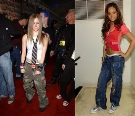
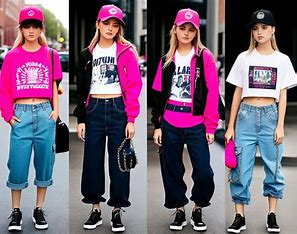

A moda dos anos 2000 foi marcada por muita ousadia e mistura de estilos. Foi uma época em que as pessoas gostavam de experimentar e se expressar através das roupas, sem seguir muitas regras. As calças de cintura baixa eram uma febre, principalmente combinadas com blusas curtas que deixavam o abdômen à mostra. Os tecidos brilhantes, metalizados e com paetês também estavam em alta, refletindo o clima de entusiasmo com a chegada do novo milênio.
As marcas apareciam com destaque nas peças, numa tendência chamada logomania. Era comum ver bonés, camisetas e bolsas com logos grandes e chamativos. As bolsas pequenas, como a baguete, e os óculos com lentes coloridas também fizeram muito sucesso.
Celebridades como Britney Spears, Paris Hilton e Christina Aguilera influenciavam diretamente o que as pessoas usavam. No Brasil, artistas como Sandy e Kelly Key também ditavam moda entre os jovens.
Além do estilo pop, o visual alternativo ganhou espaço com os emos, roqueiros e skatistas. Tênis largos, calças baggy, correntes e camisetas de banda eram parte do visual de quem queria mostrar atitude.
Hoje em dia, muitas dessas tendências voltaram com força, especialmente entre os mais jovens. A moda dos anos 2000 deixou sua marca e continua inspirando novos estilos com um toque de nostalgia.
